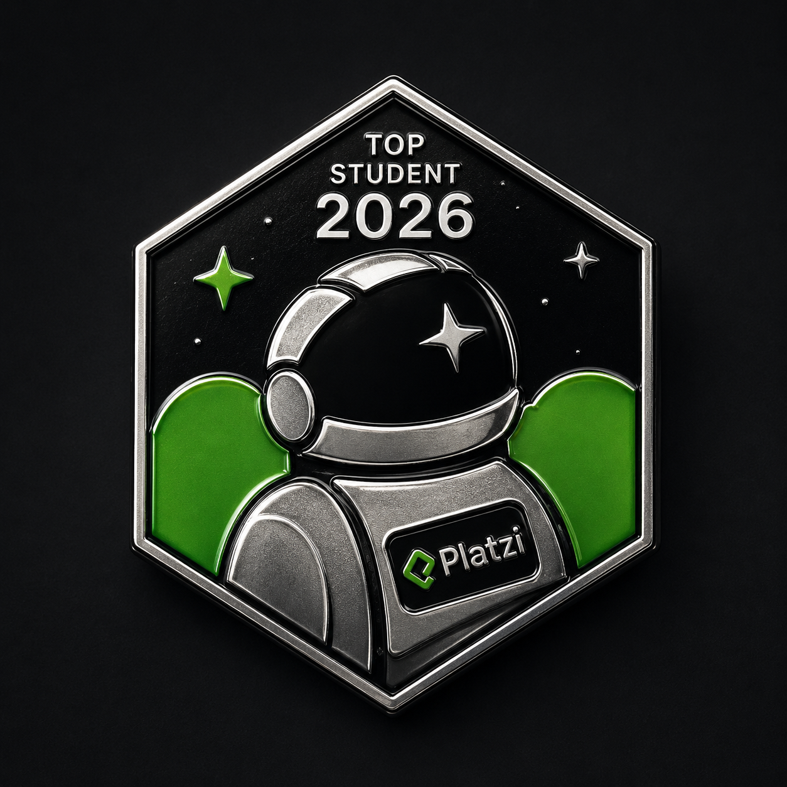

Brandon Keymolent
Operaciones, tecnología e innovación
Gerente de Operaciones e Investigación y Desarrollo Tecnológico en Figou Telecom, enfocado en telecomunicaciones, optimización de procesos, automatización, análisis operativo y desarrollo de soluciones digitales.
Combino operación real, pensamiento analítico y criterio tecnológico para resolver incidencias, mejorar flujos internos y conectar equipos comerciales, técnicos, soporte, atención y desarrollo.
Top Student México 2026 · Platzi¿Qué quieres saber de mí?
Elige lo que más te interese
Soy de CDMX y actualmente vivo en el centro junto a mi primo Irving y su perrito Kenai. Por mi parte, tengo un perro llamado Voldy — referencia a Voldemort de Harry Potter, del cual soy fan desde niño. También soy un gran fan de Batman. 🦇
El fútbol es otra de mis pasiones. Desde pequeño he sido fanático del Real Madrid, y uno de mis sueños es vivir en Madrid, España. 🏟️
Entre mis bebidas favoritas: mate, agua de sandía o mango.
Disfruto mucho los videojuegos en casa mientras escucho música de Portugal. The Man, Rels B, o lo que encuentre navegando. Y de hecho... ¡ahora mismo estás escuchando mi canción favorita del momento! 🎵

Actualmente me desempeño como Gerente de Operaciones e Investigación y Desarrollo Tecnológico en Figou Telecom, con enfoque en operación telecom, mejora de procesos, automatización, análisis de incidencias y desarrollo de soluciones digitales.
Mi trabajo conecta áreas comerciales, técnicas, soporte, atención y desarrollo para dar seguimiento a casos operativos, plataformas, CRM, dashboards, recargas, portabilidad, líneas, servicios móviles y migración de bases de datos.
Me interesa construir sistemas y procesos que reduzcan fricción, eleven la productividad interna y mejoren la experiencia del cliente con criterio operativo, tecnología, gestión de equipos e inteligencia artificial aplicada.
Soy de CDMX, fan de Harry Potter, Batman y el Real Madrid. Vivo rodeado de buena música, videojuegos y un perro llamado Voldy. 🐶
Profesionalmente, combino operaciones telecom, investigación tecnológica, CRM, análisis operativo y mejora continua para resolver problemas reales dentro de plataformas, procesos y experiencia del cliente.
Mi objetivo es crecer como perfil estratégico entre negocio y tecnología: alguien capaz de entender la operación, traducir problemas en soluciones digitales y coordinar equipos para ejecutar mejoras con criterio.
Mis Logros
Reconocimientos que respaldan mi constancia, aprendizaje y crecimiento profesional

Top Student México 2026
Fui reconocido por Platzi como uno de los 100 mejores estudiantes de México durante Platzi Conf 2026. Para mí representa disciplina, curiosidad y el compromiso de seguir creciendo en tecnología.
Ver perfil de PlatziPropuesta de Valor Profesional
Un perfil híbrido entre operación, tecnología e innovación para resolver problemas reales de negocio
Qué hago
Dirijo, analizo y doy seguimiento a procesos operativos dentro del sector telecom, conectando equipos y herramientas digitales para que la operación avance con claridad.
Problemas que ayudo a resolver
Incidencias en plataformas, CRM, recargas, portabilidad, líneas, servicios móviles, documentación operativa y coordinación entre áreas comerciales, técnicas y de atención.
Valor para una empresa
Aporto criterio operativo, visión tecnológica, comunicación transversal y capacidad para detectar mejoras, automatizar tareas y elevar la experiencia del cliente.
Experiencia Profesional
Mi etapa actual está enfocada en operaciones, investigación tecnológica y mejora continua dentro de telecomunicaciones
Gerente de Operaciones e Investigación y Desarrollo Tecnológico
Responsabilidades clave
- Dirección y seguimiento de procesos operativos.
- Coordinación con áreas comerciales, técnicas, soporte, atención y desarrollo.
- Análisis de incidencias en plataformas, CRM, recargas, portabilidad, líneas y servicios móviles.
- Gestión de equipos para coordinar entregables de web, app, dashboards, CRM y mejoras operativas.
- Documentación, seguimiento y resolución de casos operativos.
Enfoque tecnológico
- Investigación y propuesta de mejoras tecnológicas.
- Automatización y optimización de procesos internos.
- Contribución en nueva página web, app Figou para iOS/iPhone, dashboards, CRM y migración de bases de datos.
- Uso estratégico e implementación de herramientas digitales e inteligencia artificial para mejorar productividad.
- Apoyo en campañas, reportes, métricas e indicadores.
Áreas de Especialización
Competencias conectadas con valor empresarial, operación telecom y crecimiento tecnológico
Operaciones Telecom
Seguimiento de casos, líneas, servicios móviles, recargas y operación diaria en entornos de telecomunicaciones.
I+D Tecnológico
Investigación de herramientas, plataformas y mejoras que puedan fortalecer procesos internos.
Automatización de Procesos
Identificación de tareas repetitivas, flujos manuales y oportunidades para reducir fricción operativa.
Análisis de Datos Operativos
Lectura de reportes, incidencias e indicadores para tomar mejores decisiones operativas.
CRM, APIs y Plataformas
Seguimiento de sistemas, integraciones y plataformas digitales que sostienen la operación.
Experiencia y Retención
Mejora de procesos que impactan la atención, continuidad y satisfacción del cliente.
Liderazgo Operativo
Coordinación transversal, comunicación clara y seguimiento disciplinado de prioridades.
Innovación con IA
Uso estratégico de herramientas digitales e IA para documentar, analizar y acelerar tareas.
Mis Proyectos
Proyectos que conectan desarrollo, automatización, presencia digital y solución de problemas
figou.mx
Contribuí en la nueva presencia digital de Figou, conectando página web, app Figou para iOS/iPhone, dashboards, CRM, migración de bases de datos, implementación de IA y gestión de equipos para convertir necesidades operativas en soluciones visibles para negocio y usuarios.
🌐 Visitar sitioPunto de Venta Abarrotes
Sistema de punto de venta elaborado con Python. Lo estoy mejorando como práctica de automatización, registro operativo y control de información para negocios pequeños.
Ver en GitHubPortafolio Web
Plataforma personal para comunicar posicionamiento profesional, experiencia, proyectos y aprendizaje continuo. Incluye diseño responsivo, modo oscuro, multilenguaje y elementos interactivos.
Batatabit
Landing mobile first orientada a producto digital. Refuerza maquetación responsive, jerarquía visual y presentación clara de información para usuarios.
🌐 Visitar sitioMonstermon
Juego web desarrollado con lógica en JavaScript, estados interactivos y experiencia visual. Refuerza pensamiento algorítmico, eventos y control de flujo.
Mis Habilidades
Habilidades agrupadas para lectura rápida de reclutadores y líderes del sector telecom/tecnología
Gestión y liderazgo
- Liderazgo operativo
- Coordinación de equipos
- Gestión de procesos
- Seguimiento de incidencias
- Comunicación interna
- Mejora continua
- Atención y retención de clientes
Tecnología y desarrollo
- Investigación y desarrollo tecnológico
- Automatización
- Análisis de datos
- CRM
- APIs
- Plataformas digitales
- Inteligencia artificial aplicada
- Soporte técnico
Telecomunicaciones
- Portabilidad
- Recargas
- SIM/eSIM
- APN
- VoLTE
- Roaming
- Altán
- Servicios móviles
- Experiencia de usuario telecom
Mis Certificaciones
Cursos que respaldan mi formación técnica, profesional y de comunicación. Da click en cualquier curso para ver su certificado.
Desarrollo y programación
- Curso de Java
- Curso de Java SE: SQL y Bases de Datos
- Curso Básico de Testing en Java
- Curso Básico de Programación
- Fundamentos de Ingeniería de Software
- Curso Básico de Algoritmos y Pensamiento Lógico
- Curso de Pensamiento Lógico: Lenguajes de Programación
- Curso de Pensamiento Lógico: Manejo de Datos, Estructuras y Funciones
- Curso de Pensamiento Lógico: Algoritmos y Diagramas de Flujo
Front-End
Herramientas y sistemas
- Curso Profesional de Git y GitHub
- Curso de Introducción a la Terminal y Línea de Comandos
- Curso de Prework: Configuración de Entorno de Desarrollo en Windows
- Curso de Configuración de Entorno de Desarrollo en macOS
- Curso Básico de Computadores e Informática
- Curso de Redes Informáticas de Internet
- Curso de Introducción a la Web: Historia y Funcionamiento de Internet
Análisis y negocios
Comunicación y crecimiento
- Curso de Comunicación Efectiva para Equipos de Trabajo
- Curso de Comunicación Asertiva para la Vida Personal y Profesional
- Audiocurso de Cómo Dar Feedback
- Audiocurso de Cómo Recibir Feedback
- Audiocurso sobre la Neurociencia del Feedback
- Curso Herramientas Prácticas para la Inteligencia Emocional
- Curso de Inteligencia Emocional
- Curso para Desarrollar la Empatía
- Cursos de Inglés
Vamos a Hablar
Estoy abierto a conversaciones profesionales, colaboración tecnológica y oportunidades de crecimiento en telecomunicaciones, operaciones e innovación
Si buscas un perfil que entienda operación, tecnología, clientes y mejora de procesos, podemos conversar. Me interesa conectar con equipos que estén construyendo mejores servicios digitales y telecom.